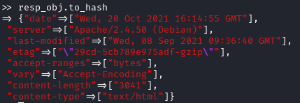
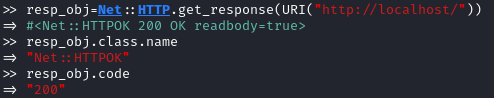
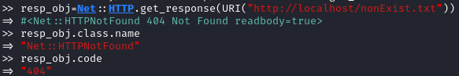
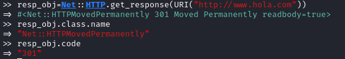
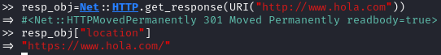

Net::HTTP library
Documentation:
https://ruby-doc.org/stdlib-2.1.1/libdoc/net/http/rdoc/Net/HTTP.htmlNet::HTTP supports a variety of verbs: get, post, options, head,....
Net::HTTP.get & Net::HTTP.get_print methods (
https://ruby-doc.org/stdlib-2.1.1/libdoc/net/http/rdoc/Net/HTTP.html#method-c-get)
◇
get Sends a GET request to the target and returns the HTTP response as a string
resp=Net::HTTP.get(URI("http://localhost")) ◇
get_print Gets the
body text from the target and outputs it to
$stdout Net::HTTP.get_print(URI("http://localhost")) Note: we can avoid using the URI object in favor of the
host and the
path parameters (note: port is 80 by default)
Net::HTTP.get_print("localhost", "/")Documentation:
https://ruby-doc.org/stdlib-2.1.1/libdoc/net/http/rdoc/Net/HTTPResponse.htmlget_response method not return a string as a result. We have an
HTTPResponse object that encapsulates the HTTP response (entire response, not only the body).
Status information is easy to retrieve (see below)
resp_obj=Net::HTTP.get_response(URI("http://localhost")) ◇
to_hash: hash of headers in the response
Note that each response status has its own HttpResponse subclass (
documentation link)
◇ HTTPOK → 200
 ◇ HTTPNotFound → 404
 ◇ HTTPMovedPermanently → 301
 ▪ location header specify where is been moved the resource:
